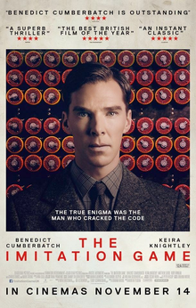

Un film di Morten Tyldum
Imitation Game è un film del 2014 diretto da Morten Tyldum, basato sulla vita di Alan Turing, matematico e crittografo britannico. Il film racconta la storia di Turing durante la seconda guerra mondiale, quando fu incaricato di decifrare i codici segreti nazisti, contribuendo così in modo significativo alla vittoria degli Alleati.
Ambientato nella Gran Bretagna durante la Seconda Guerra Mondiale, Imitation Game narra la straordinaria storia di Alan Turing, un matematico brillante ma eccentrico, interpretato da Benedict Cumberbatch. Turing viene reclutato dal governo britannico per decifrare i codici segreti dell'Enigma, la macchina crittografica nazista che mette in pericolo milioni di vite alleate. Lavorando sotto l'egida di un'affascinante ufficiale del MI6, interpretato da Keira Knightley nel ruolo di Joan Clarke, una matematica altrettanto brillante, Turing si immerge nel mondo dell'intelligence e dello spionaggio, dove ogni mossa può essere fatale e ogni indizio può portare alla vittoria o alla sconfitta. La trama si concentra sulla lotta contro il tempo mentre Turing e il suo team di esperti matematici, tra cui Matthew Goode nei panni di Hugh Alexander e Mark Strong nel ruolo di Stewart Menzies, affrontano ostacoli enormi, sia personali che professionali, nel tentativo di creare la macchina che alla fine si rivelerà fondamentale per la vittoria degli Alleati.